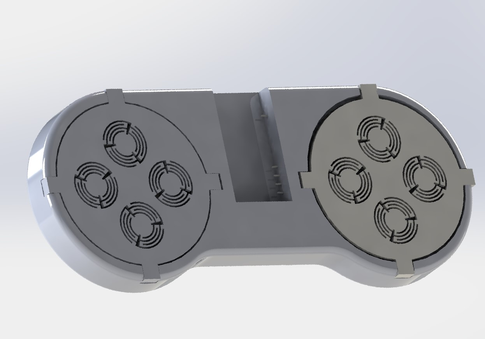
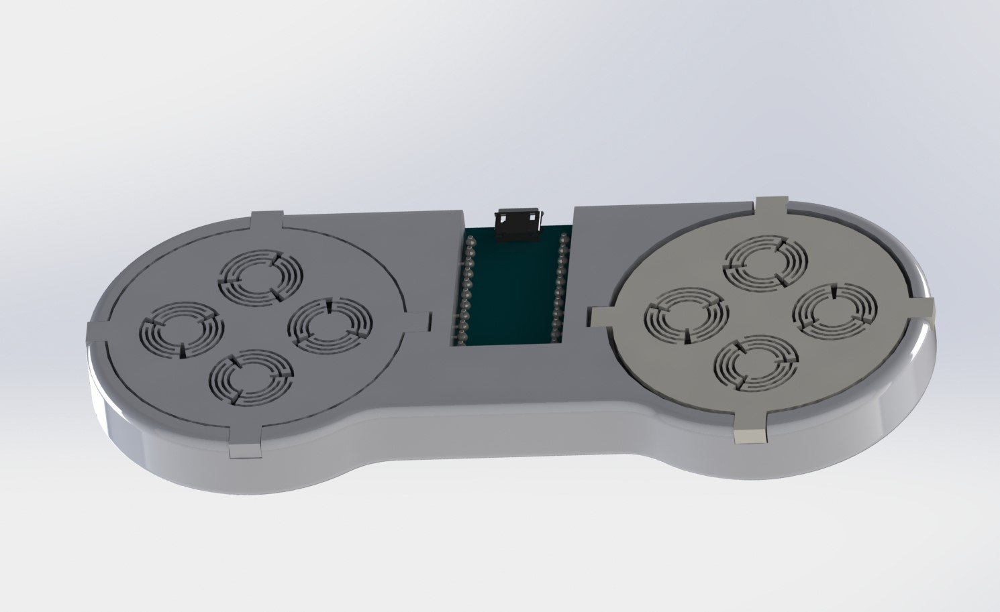
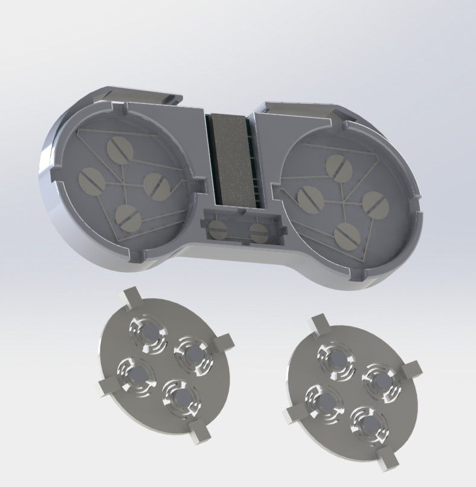
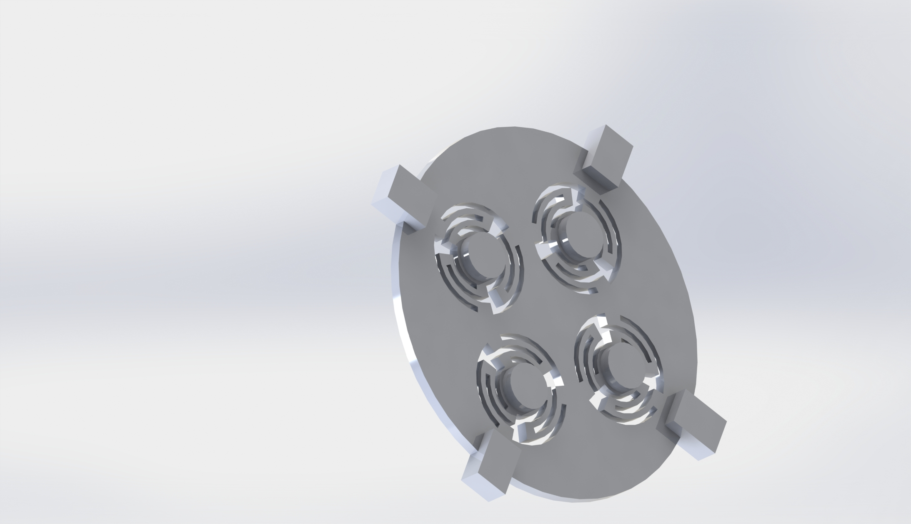

3D Printed Game Controller
I designed and printed a fully functional gamepad with 8 buttons and 2 bumpers. I'm working to continously upgrade with the controller with more functionality and hopefully soon have working capacitive touch buttons.
Design
The gamepad uses mechanical plastic springs to actuate the buttons. These springs are printed of PLA and grouped in 3s to center the button when it is pressed. An arduino micro board is used to transmit the button presses to a computer. The left and right bumpers are actuated through the deflection of a cantilever beam that completes the circuit between two parallel lines. The Arduino micro connects each button between a signal and ground. In the off state the signal pins transmit 3.3V to the open circuit and completing the circuit grounds the buttons. This was done so that impedance would not be an issue and so that a pull-up resistor could be avoided.
Components
The gamepad like all Voxel8 prints is composed of 3 distinct parts. The plastic body, the silver trace and embedded components. In this print the plastic body acts as the case and part of the actuation mechanism. The springs are all entirely printed the print comes in 4 pieces, the main body and 3 button covers. Silver traces run through the body at 3 different layers to avoid shorting any of the pin outputs. Silver is also printed on the bumpers. Finally an Arduino Micro needs to be inserted into the print shortly before finishing to map all of the button inputs
Mechanisms
Each button utilizes 3 evenly spaced springs to deflect and make contact with the trace below. The bumpers act as cantilevers and connect parallel traces. The traces are parallel unlike the buttons so that the exact location of the deflected cantilever does not matter as long as it makes contact.